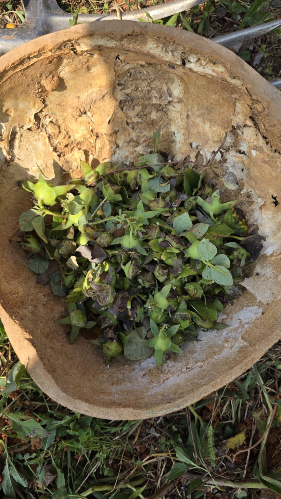
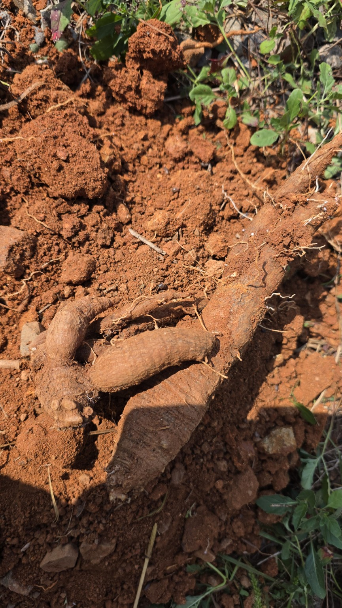
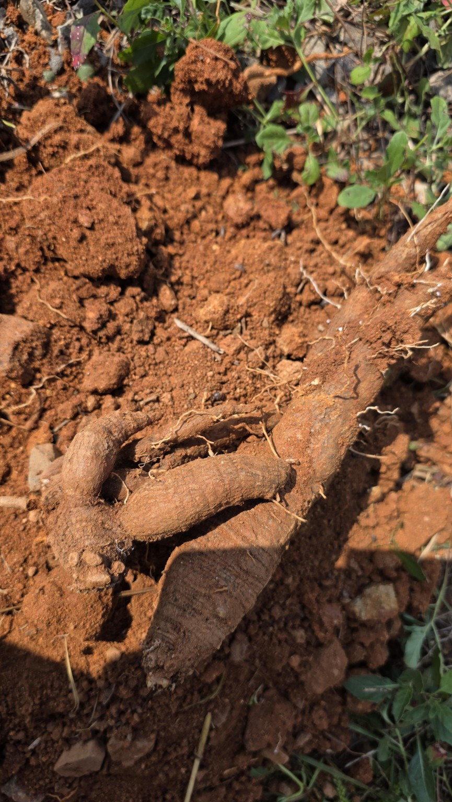
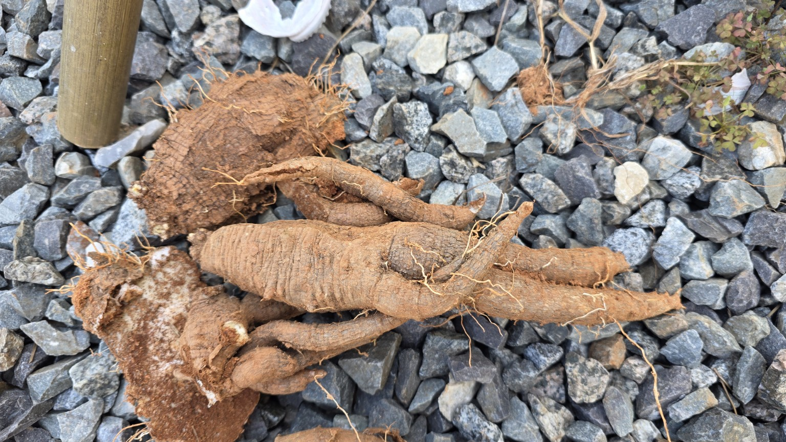
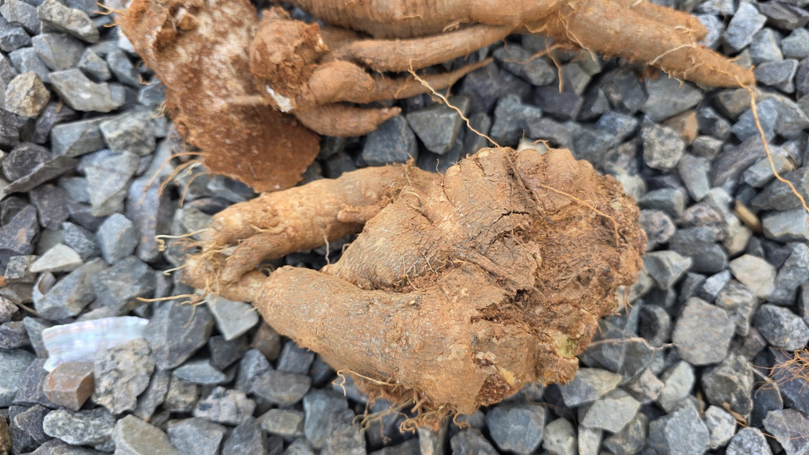

농작업 원본 보존 기록
화곡농장 더덕수확과 씨앗채취
작업일 2026-09-23 · 화곡농장
사용자가 붙인 원래 제목은 **“20260923 화곡농장 더덕수확 &더덕씨”**입니다. 이 문서는 해당 사진·영상의 실제 내용과 대화에서 확인되는 기록을 새로 정리한 보관본입니다. 새로운 재배 지침이나 수확량 추정은 덧붙이지 않았습니다.
| 항목 | 확인 내용 |
|---|---|
| 작업명 | 더덕 수확 및 더덕씨 관련 채취 기록 |
| 작업일·장소 | 2026년 9월 23일 · 화곡농장 — 사용자 제공 |
| 농작업 사진 | JPG 원본 7장 |
| 농작업 영상 | MP4 원본 3개, 웹 재생용 사본 3개 |
| 기타 화면·이미지 | 대화 첨부 화면 2장, 기존 검증 캡처 10장, 영상 대표 화면 3장 |
| 시간 표기의 근거 | 원본 파일명 12:47:11~13:54:45; 작업 소요시간·시작·종료 시각은 미확인 |
| 정리본 작성일 | 2026-10-05; 작업일과 별개 |
작업 기록 · 사진·영상 목록 · 대화·배포 수정 경과 · 모든 화면 캡처 · 첨부 원본 목록
1. 더덕씨 관련 채취 기록과 뿌리 수확 과정
1-1. 채취한 열매(삭과)를 모아 둔 모습
12:47:11 파일은 용기에 잎·줄기와 함께 모아 둔 열매를 보여 줍니다. 녹색과 갈색 부분이 함께 보입니다. 사용자 작업명은 “더덕씨”이지만, 사진에서 직접 확인되는 것은 삭과를 모아 둔 상태입니다. 분리된 씨앗, 채종 완료, 발아 여부까지 확인한 자료는 아닙니다.
사진 12:47:11 · 채취한 더덕 삭과


용기에 모아 둔 잎·줄기와 녹색 및 갈색 삭과가 보입니다. 분리한 씨앗 자체를 촬영한 사진은 아닙니다.
원본: 20260923_124711.jpg · 865 × 1536px
1-2. 붉은 흙 속에서 드러난 뿌리
12시대 사진·영상에 이미 뿌리를 드러낸 현장이 나타납니다. 주변 식생, 파낸 흙, 굵고 여러 갈래로 나뉜 뿌리가 보입니다. 따라서 “12시에는 씨앗만 채취하고 13시부터 굴취를 시작했다”는 순서는 이 자료만으로 확정하지 않습니다.
영상 12:47:13 · 주변 식생에서 굴취 자리로
영상 대표 화면 · 원본 MP4 · 웹 재생용 MP4
원본 길이: 약 3.12초. 원본의 소리도 보존하며, 자동 재생하지 않습니다.

영상 12:47:25 · 드러난 뿌리의 현장 영상
영상 대표 화면 · 원본 MP4 · 웹 재생용 MP4
원본 길이: 약 1.92초. 원본의 소리도 보존하며, 자동 재생하지 않습니다.

사진 12:47:28 · 흙에서 드러난 더덕 뿌리


붉은 흙을 걷어 낸 자리에서 굵고 갈라진 뿌리가 드러나 있습니다.
원본: 20260923_124728.jpg · 865 × 1536px
사진 12:47:29 · 굴취 현장 가까이 보기


앞 사진과 같은 굴취 현장을 가까운 각도에서 기록했습니다. 뿌리와 주변 흙 상태를 볼 수 있습니다.
원본: 20260923_124729.jpg · 865 × 1536px
1-3. 자갈 위에 놓인 수확물 전체와 근접 모습
13:54:37 이후의 파일은 자갈 바닥 위에 놓은 수확물의 전체 모습과 굵은 부분·분지 형태를 기록합니다. 흙이 묻은 표면과 잔뿌리를 확인할 수 있습니다. 사진에 함께 나온 물건을 길이 기준으로 사용하거나, 모습만으로 연근·중량·상품성을 추정하지 않았습니다.
사진 13:54:37 · 수확한 더덕 전체 모습

자갈 바닥 위에 놓은 수확물의 전체 배치와 여러 갈래로 나뉜 뿌리 형태를 기록했습니다.
원본: 20260923_135437.jpg · 1536 × 865px
영상 13:54:39 · 수확물의 전체와 근접 모습
영상 대표 화면 · 원본 MP4 · 웹 재생용 MP4
원본 길이: 약 1.30초. 원본의 소리도 보존하며, 자동 재생하지 않습니다.

사진 13:54:41 · 길게 뻗은 뿌리와 분지

길쭉한 뿌리, 갈라진 부분, 잔뿌리와 흙이 묻은 표면을 가까이 기록했습니다.
원본: 20260923_135441.jpg · 1536 × 865px
사진 13:54:42 · 같은 수확물의 다른 사진


앞 사진과 비슷한 구도지만 별개의 원본입니다. 임의로 중복 삭제하지 않고 보존했습니다.
원본: 20260923_135442.jpg · 1536 × 865px
사진 13:54:45 · 굵은 분지부 근접 기록


넓고 굵은 부분과 옆으로 뻗은 뿌리, 표면의 흙·주름·틈을 가까이 보여 줍니다.
원본: 20260923_135445.jpg · 1536 × 865px
2. 촬영 자료 10개 전체 목록
아래 시간은 파일명 기준입니다. 사진이 비슷해도 별개의 원본을 삭제하지 않았습니다. 각 원본은 이름·파일 내용·해시를 그대로 보존했습니다.
| 시각 | 유형 | 원본 파일 | 보이는 내용 | 원본 크기 |
|---|---|---|---|---|
| 12:47:11 | 사진 | 20260923_124711.jpg | 채취한 더덕 삭과 | 0.43 MB |
| 12:47:13 | 영상 | 20260923_124713.mp4 | 주변 식생에서 굴취 자리로 | 4.29 MB |
| 12:47:25 | 영상 | 20260923_124725.mp4 | 드러난 뿌리의 현장 영상 | 2.39 MB |
| 12:47:28 | 사진 | 20260923_124728.jpg | 흙에서 드러난 더덕 뿌리 | 0.49 MB |
| 12:47:29 | 사진 | 20260923_124729.jpg | 굴취 현장 가까이 보기 | 0.41 MB |
| 13:54:37 | 사진 | 20260923_135437.jpg | 수확한 더덕 전체 모습 | 0.67 MB |
| 13:54:39 | 영상 | 20260923_135439.mp4 | 수확물의 전체와 근접 모습 | 1.75 MB |
| 13:54:41 | 사진 | 20260923_135441.jpg | 길게 뻗은 뿌리와 분지 | 0.46 MB |
| 13:54:42 | 사진 | 20260923_135442.jpg | 같은 수확물의 다른 사진 | 0.50 MB |
| 13:54:45 | 사진 | 20260923_135445.jpg | 굵은 분지부 근접 기록 | 0.40 MB |
3. 확인된 사실과 미확인 사항
| 항목 | 기록 범위 |
|---|---|
| 수확·채취 장소와 작업일 | 사용자 설명으로 확인 |
| 삭과, 뿌리 노출 현장, 수확물 모습 | 원본 사진과 영상으로 확인 |
| 수확 중량·정확한 수량 | 계측 자료 없음 |
| 재배 연수·실측 길이·직경 | 확인 자료 없음 |
| 정확한 작업 필지 | 이 기록에서 지정되지 않음 |
| 종자 분리·건조 완료 | 확인 자료 없음 |
| 종자 성숙도·발아율 | 이 사진·짧은 영상으로 판단하지 않음 |
| 병해·부패 여부 | 사진만으로 진단하지 않음 |
4. 앞선 설명에서 정정한 부분
| 이전 설명 | 원본 대조 후 기록 |
|---|---|
| 12:47:28·29는 “삭과 근접 사진” | 두 파일은 흙에서 드러난 뿌리 사진 |
| 12:47:25 영상은 씨앗 채취 과정 | 노출된 뿌리 현장 영상 |
| 12시대 씨앗 채취 → 13시대 굴취 시작 | 12시대에도 굴취 현장이 있으므로 시작 순서를 단정하지 않음 |
| 사진·영상 파일명 목록만 있으면 미디어 포함 | 실제 파일 보존과 문서의 표시·재생·원본 다운로드를 각각 확인해야 함 |
| 사이트의 9월 24일 제목이 작업일 | 기존 제목 메타데이터의 작성일 9월 24일과 실제 작업일 9월 23일을 구분 |
앞서 만든 상세 MD·HTML 및 ZIP은 원본 확인용으로 그대로 보존했습니다. 그 안의 채종·건조·보관 설명이나 당시의 미완료 상태는 과거 문서 내용이며, 이번 수확 기록의 새로운 현장 사실로 옮기지 않았습니다.
5. 전체 이미지·첨부 보존 범위
| 포함 구분 | 개수 | 열기 |
|---|---|---|
| 현장 사진 원본 | 7 | 본문 및 images/ |
| 대화에 첨부된 오류·저장소 화면 | 2 | 화면 캡처 부록 |
| 기존 ZIP 안의 배포 검증 캡처 | 10 | 화면 캡처 부록 |
| 영상 대표 화면 | 3 | 각 영상 및 posters/ |
| 원본 영상 | 3 | videos/ |
| 웹 재생용 영상 사본 | 3 | playback/ |
| 기존에 전달·수집된 ZIP | 19 | 보존 첨부 목록 |
직접 열람 경로의 이미지 파일은 22개입니다. 그중 영상 대표 화면 3개와 화면 캡처 12개는 농작업 사진 7장과 구분했습니다. 과거 ZIP·내장 HTML 안의 중복 보존본은 별도이며, 22개에 중복 가산하지 않았습니다.
6. 열람 방법과 근거
ZIP을 전체 압축 해제한 뒤 index.html 또는 record.html을 여세요. HTML에서 사진을 누르면 확대되고, 영상에는 재생 버튼과 원본 다운로드가 있습니다. Markdown은 같은 폴더의 사진 상대 경로를 사용합니다. HTML·MD만 다른 곳으로 옮기면 상대 경로 미디어가 끊길 수 있습니다.
| 근거 | 포함 위치 |
|---|---|
| 사용자 작업명·사진 7장·영상 3개 | 본문, images/, videos/ |
| 이번 파일명·크기·SHA-256 대조 | 미디어 목록, 원본 보존 목록, 파일 체크섬 |
| 과거 설명과 수정 경과 | 수정 경과 부록, 부록 Markdown |
| 과거 온라인 검증 결과 | 보존된 더덕 운영 검증 JSON, 브라우저 검증 JSON |
배포 상태 주의: 부록의 운영·제목 검증은 보존된 2026-09-30 자료에 대한 정리입니다. 이번 파일 생성이 현재 공개 사이트 재배포 또는 비공개 인증 후 재검증을 뜻하지 않습니다. 전체 ZIP에는 다른 비공개 프로젝트의 점검 메타데이터도 있으므로, 채팅 보관용으로 취급하며 그대로 공개 저장소에 올리지 않습니다.